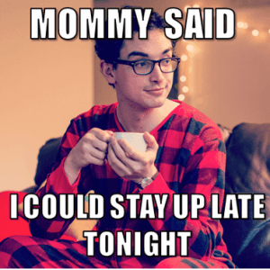

Daryush "Roosh" Valizadeh created ROK in October 2012. You can visit his blog at RooshV.com or follow him on Twitter and Facebook.


It’s well-established that human beings are like monkeys when imitating and copying social behaviors such as mannerisms, speech, and even ideas. Birds of a feather flock together, so if you know one individual within a tight social group, you probably also know the others (this is why self-help gurus strongly advise you to choose your friends carefully). There’s nothing stopping this social mimicry from crossing gender lines, meaning that the more time males spend with females, the more they become like them.
My sister has three brothers who she has spent thousands of hours with. Without her even realizing it, she has developed a genuine sense of humor, giving her a personality that leans away from elegance and more towards entertainment, similar to what her oldest brother does when attempting to bed women and publish web articles. At the same time, my younger brother has picked up on a few of her mannerisms, making him less masculine in the process. This phenomenon is normal among mixed-sex families, but can you imagine the effect on people if they were forced to interact with the opposite sex not only in the home, but outside of it as well?
Thanks to feminism, and the penis envy it installs in women, men no longer have spaces where females are not present. They have invaded education and workplaces at all levels. They are present in coffee houses, formerly male clubs, and even barber shops. Not only are men no longer able to “practice” being a man around other men without fear of offending the opposite sex, they are unconsciously picking up female mannerisms and ideas at the same time that females are picking up on male mannerisms.
Because the sexes are not segregated, women are becoming masculinized and men are becoming feminized. This is greatly harming male development and creating a generation of feminized men who are confused about their identity and masculinity.
We need to ask ourselves two questions:
1. How much time does a male need to spend around females during adolescence to gain sufficient socialization ability to procure female mates?
2. After adolescence, how much non-intimate socialization with females is required to maintain his well-being and happiness?
If you look back to the generation of our fathers or grandfathers, masculine and feminine spheres were significantly more segregated than what we see today. Each sex kept to their own and were only brought together in a handful of situations outside of family. Even family, if you go back to agrarian times, consisted of men working the fields or engaging in hunts for most of the day while women (and little children) attended to household duties. They did not sit down together and watch movies all day or gossip endlessly about other people. That sort of business is too trifling for a man to endure.
Not only do men have to infantalize their speech and behavior to not trigger the ever-present politically correct police, but they are passively absorbing female behavior through chronic daily interactions. This assault on males begins from their first day in kindergarten, and continues without relief for the next several decades. By the time the average Western man is 20-years-old, he has spent at least half of his entire history of socialization with women.
Is it a coincidence that the increased visibility and flamboyance of homosexuals tracks with the social integration of men and women in all spaces? Of course I’m not stating that this integration is the sole cause for the homo-obsession we have in the Western world today, which has recently culminated with the sanctioning of anal marriage, but it’s hard to deny that men whose masculinity has been diluted since childhood find favor in behaviors that are decidedly feminine.

I spent an extended period of time talking to thousands of women in my life, trying to excite and please them through trial and error. I have come to understand women more than most men, so I wasn’t surprised recently when I caught myself speaking in a feminine uptalk cadence that only girls and manginas use. I was horrified. I’ve since become more conscious about blocking other female mannerisms that want to slip into my being.
It’s no shock that the most successful players I know are not ultra-masculine at all, but have many feminine traits that actually allow them to connect more easily with women who prefer a more cosmopolitan man than one who looks like he just came from the Siberian tundra. While masculine men have no problems getting a woman, I’m starting to suspect that men without feminine personality traits will find it hard to gather the ability and motivation to lay a lot of them in a playboy manner.
Every man should do a preventive check-up to see if his social interactions with women are actually making him more feminine, and if more masculine interaction is needed to tip the balance. Because humans adopt traits of the individuals they spend the most time with, we need to be more conscious about what influences we are allowing into our lives that take us away from masculinity and strength.
I personally see little need for a man to work with women, go to school with them, or even maintain asexual relationships with them, especially with women who don’t give him sexual access to her friends. While there are many problems in modern society that are difficult to solve, excising needless social interaction with females outside of sexual relationships is an easy one to fix. Choose to spend your free time with men so your masculinity remains strong and steady.
This article was originally published on Roosh V.
Read Next: Two Strategies For Having A Good Sex Life